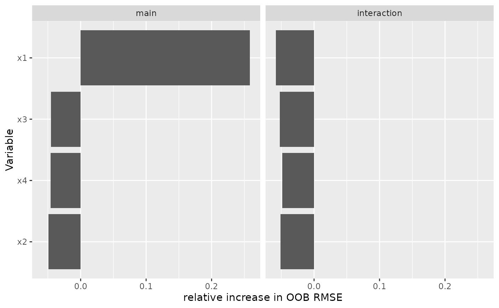

Extract variable importance from a vimp.boostmtree
object, for both the main effect of each covariate and its interaction with
time.
Usage
gg_boost_vimp(object, components = c("main", "interaction"), ...)Arguments
- object
A
vimp.boostmtreeobject.- components
Character vector naming the components to extract, any of
"main"and"interaction". Defaults to both.- ...
Not used; present for S3 consistency.
Value
A gg_boost_vimp data.frame with columns:
- variable
Factor covariate name.
- importance
Numeric importance.
- component
Factor,
mainorinteraction.- response
Factor naming the response.
with attributes metric (the importance metric) and time.effect.
Details
boostmtree reports importance in two parts. The main effect asks what is
lost by perturbing a covariate; the interaction asks what is lost by
perturbing its interaction with time. For a longitudinal model the second is
often the interesting one, since it is where a covariate whose effect
changes over follow-up shows up.
boostmtree labels the interaction rows x1:time, x2:time and so on. The
suffix is stripped here, so a variable carries one label across both
components and can be compared or dodged against itself.
The importance metric is a string on the source object rather than a fixed
quantity, so it travels as the metric attribute and the renderer uses it to
label the axis. The overall time effect has no variable to attach to and
travels as the time.effect attribute.
A joint importance object (vimp.boostmtree(fit, joint = TRUE)) reports a
single combined value, labelled joint.vimp. Note that CRAN boostmtree
2.0.0 cannot produce one at all; the patched build this package requires is
needed to compute it.
Examples
# \donttest{
sim <- boostmtree::simLong(n = 25, n.time = 4, model = 1)$data.list
fit <- boostmtree::boostmtree(
x = sim$features, tm = sim$time, id = sim$id, y = sim$y,
M = 50, cv.flag = TRUE, verbose = FALSE
)
plot(gg_boost_vimp(boostmtree::vimp.boostmtree(fit)))

# }